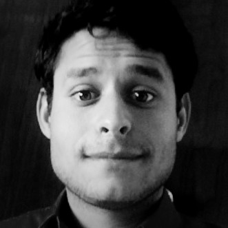

About Me
Background
I am an Ag-Tech Professional working as a Postdoc Researcher at the University of Missouri. I specialize in Remote Sensing and Machine Learning applications for Agriculture. My work focuses on developing innovative techniques for precision agriculture, particularly in biomass estimation and canopy height sensing.
I strive to make great quality research and work extensively with R and Python. My passion lies in measuring grass for a living and contributing to sustainable farming practices. M-I-Z-‚Ķ.. Z-O-U! üêÖ
Research Interests
- Remote Sensing Applications: Satellite-based time-series analysis for agricultural monitoring
- Machine Learning: Advanced algorithms for crop yield prediction and biomass estimation
- Precision Agriculture: Development of sensors and web-based applications for farm management
- Data Science: Statistical modeling and data visualization for agricultural insights
- Sustainable Farming: Technology solutions for improved agricultural practices
Education
My academic journey has taken me through rigorous training in agricultural technology, remote sensing, and data science. I have developed expertise in both theoretical foundations and practical applications of technology in agriculture.
Philosophy
I believe in the power of technology to transform agriculture and make farming more efficient, sustainable, and productive. My work bridges the gap between cutting-edge research and practical applications that can directly benefit farmers and agricultural communities.
Contact Information
Feel free to reach out if you’d like to collaborate on research, discuss agricultural technology, or learn more about my work.
Email: gustavo.togeirodealckmin@missouri.edu
Current Position: Postdoc Researcher
Institution: University of Missouri
Department: Missouri Forage and Livestock Program

Skills Overview
Connect With Me
Quick Facts
- üå± I measure grass for a living
- üõ∞Ô∏è Remote sensing enthusiast
- ü§ñ Machine learning practitioner
- üìä R & Python developer
- üéì Postdoc at Mizzou
- üåæ Agriculture technology advocate